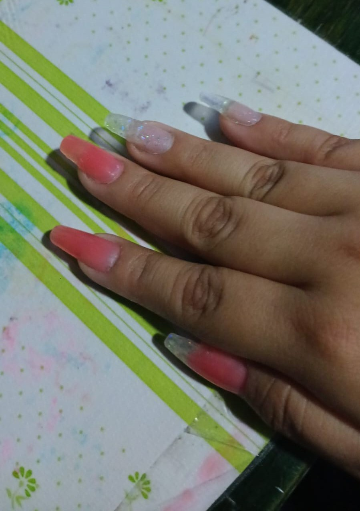
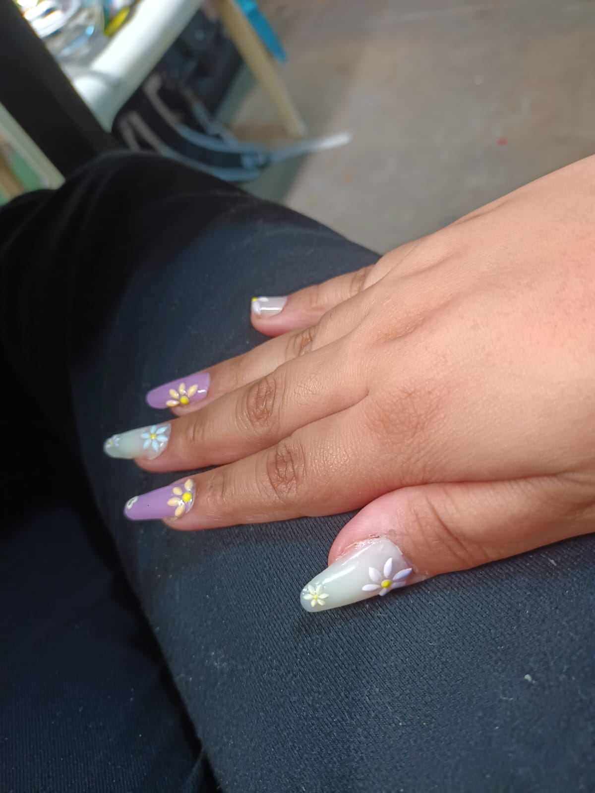
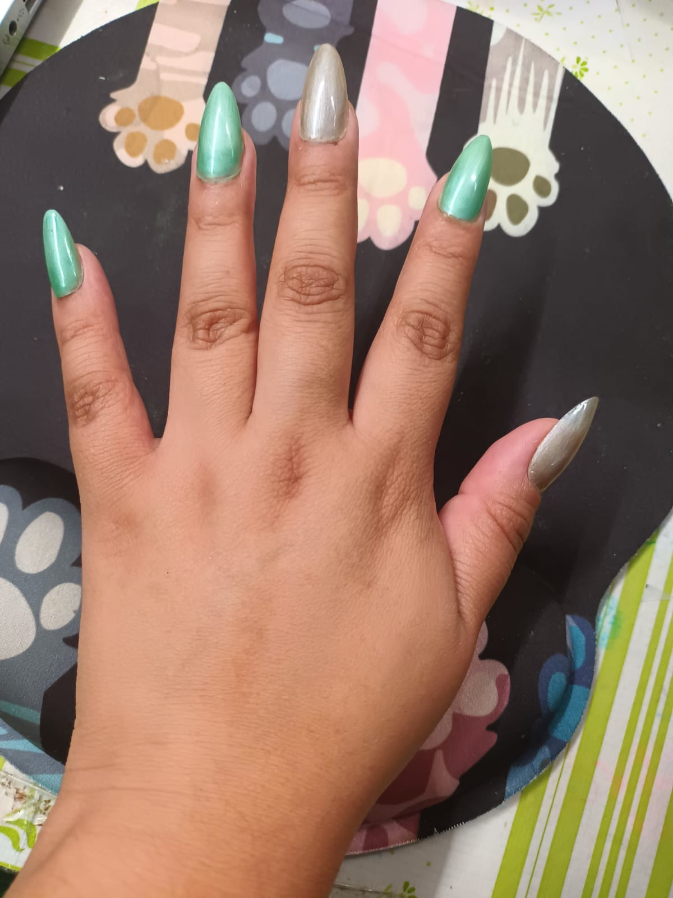
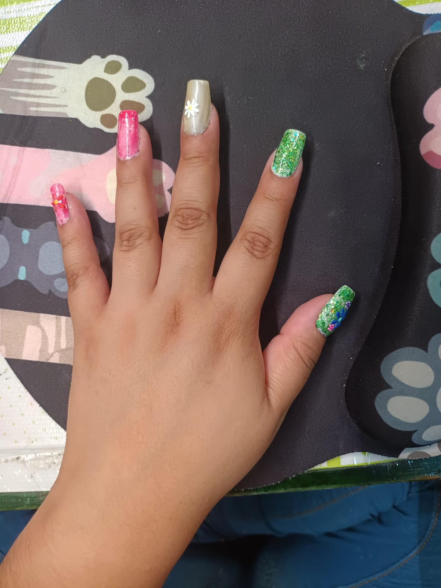

Este es mi último pasatiempo favorito adquirido, no he tomado nungún curso, todo lo que he aprendido ha sido mediante videos y tutoriales en YouTube, Tik Tok y Facebook...

Estas fueron las primeras uñas que me realicé con una técnica llamada polygel.

Estas fueron las segundas uñas con la misma técnica polygel y le coloqué stickers 5d de flores.
Despues conocí más técnicas de aplicación que en lo personal se me hicieron mucho más fáciles.

Este fue el primer diseño de uñas que me hize utilizando la técnica soft gel y con efecto ojo de gato.

Este fue el últio diseño que me realicé utilizando la técnica soft gel.
Estos son algunos de los tutoriales que me ayudaron.
Preparación de las uñas.
Correcto limado de uñas.
Diferencias entre los preparadores de uñas.
Cómo recortar las plantillas para uñas estructurales.
Aplicación de distintas técnicas.
UÑAS de POLYGEL con MOLDES DUAL SYSTEM.
Sistema Soft Gel para aplicación de uñas postizas.
Diferencias entre algunas técnicas de aplicación.
Aqui te dejo algunos enlaces de las cositas que compré, utilicé y realmente te recomiendo.
- Kit herramientas para uñas.
- Lampara Para Uñas Uv Gelish.
- Kit básico de preparadores.
- Guantes de nitrilo para evitar alergias.
- 20 Colores esmaltes semipermanentes para uñas Uv.
- Kit 6 Polygel Moldeable.
- Tips Soft gel uñas postizas diferentes modelos Y tamaños.
- Pulidor de uñas acrilicas inalámbrico.
- Kit pinceles para decoración.
- Plantillas para uñas estructurales.